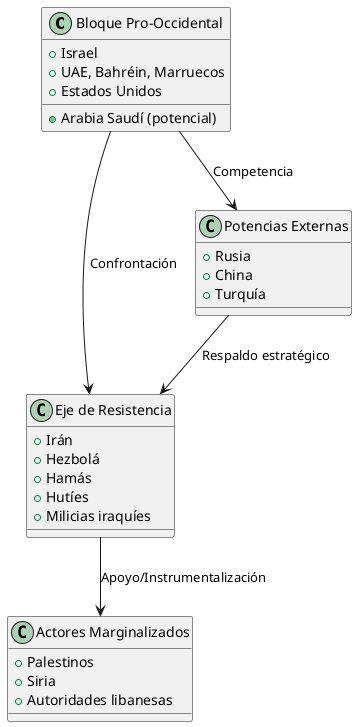

Los Acuerdos de Abraham: Análisis Crítico y Situación Actual
Los Acuerdos de Abraham: Análisis Crítico y Situación Actual
Los Acuerdos de Abraham, firmados en la segunda mitad de 2020, representan una serie de acuerdos para normalizar las relaciones entre Israel y varios estados árabes, constituyendo uno de los desarrollos diplomáticos más significativos en Medio Oriente desde los Acuerdos de Oslo. Sin embargo, su análisis crítico revela complejidades y consecuencias no previstas que han emergido particularmente tras el conflicto Gaza-Israel de 2023-2024.
Orígenes y Contexto Histórico
Ruptura del Paradigma Tradicional
Los Acuerdos de Abraham rompieron con el paradigma árabe tradicional que condicionaba la normalización con Israel a la resolución del conflicto palestino. Esta ruptura se fundamentó en:
- Convergencia de intereses frente a la amenaza iraní
- Necesidades económicas y tecnológicas de los estados árabes
- Fatiga árabe con la causa palestina
- Presiones y incentivos estadounidenses
Antecedentes Diplomáticos
El proceso de normalización no emergió en el vacío. Existían contactos comerciales y de seguridad no oficiales entre Israel y los países del Golfo desde décadas anteriores, particularmente en:
- Cooperación en inteligencia contra Irán
- Relaciones comerciales encubiertas
- Intercambios tecnológicos y de defensa
Desarrollo Cronológico y Actores
Tabla de Actores y Fechas de Firma
| País | Fecha de Anuncio | Fecha de Firma | Mediador Principal | Incentivos Específicos |
|---|---|---|---|---|
| Emiratos Árabes Unidos | 13 agosto 2020 | 15 septiembre 2020 | Estados Unidos | Tecnología F-35, inversiones |
| Bahréin | 11 septiembre 2020 | 15 septiembre 2020 | Estados Unidos | Garantías de seguridad |
| Sudán | 23 octubre 2020 | Declaración únicamente | Estados Unidos | Remoción de lista terrorista |
| Marruecos | 10 diciembre 2020 | 22 diciembre 2020 | Estados Unidos | Reconocimiento Sahara Occidental |
Proceso de Negociación
Mediados por Estados Unidos, el anuncio del 13 de agosto de 2020 concernía a Israel y los Emiratos, estableciendo el precedente para las negociaciones subsecuentes. El rol de Jared Kushner y el equipo de política exterior de Trump fue fundamental en estructurar los incentivos para cada parte.
Análisis de Contenido y Provisiones
Estructura de los Acuerdos
Los acuerdos consisten en:
- Declaración Abraham: Marco general de principios
- Acuerdos Bilaterales: Específicos para cada país
- Memorandos de Entendimiento: Sectores específicos
Provisiones Principales
Normalización Diplomática
- Establecimiento de embajadas
- Intercambio de embajadores
- Vuelos comerciales directos
- Cooperación consular
Cooperación Económica
- Liberalización comercial
- Inversiones conjuntas
- Transferencia tecnológica
- Proyectos de infraestructura
Cooperación en Seguridad
- Intercambio de inteligencia
- Cooperación militar
- Ventas de armas
- Ejercicios conjuntos
Implicaciones Geopolíticas Críticas
Diagrama de Realineamiento Regional

Consecuencias No Previstas
Emboldening de Políticas Israelíes
En lugar de frenar los abusos israelíes, los Acuerdos empoderaron a sucesivos gobiernos israelíes a ignorar aún más los derechos palestinos. En el primer año tras los Acuerdos, la violencia de colonos aumentó dramáticamente en Cisjordania.
Fortalecimiento del Eje de Resistencia
Mientras los Acuerdos de Abraham pueden haber detenido a los países árabes de presionar a Israel hacia un acuerdo con los palestinos, por el contrario aceleraron los esfuerzos de Irán para explotar agravios en Medio Oriente y armar una red de grupos listos para luchar.
Impacto Económico y Resultados Tangibles
Datos de Intercambio Comercial (2020-2024)
| Año | Israel-UAE (millones USD) | Israel-Bahréin (millones USD) | Israel-Marruecos (millones USD) |
|---|---|---|---|
| 2020 | 180 | 12 | 45 |
| 2021 | 1,200 | 35 | 78 |
| 2022 | 2,500 | 67 | 156 |
| 2023 | 3,800 | 89 | 203 |
| 2024 | 4,200 | 95 | 189 |
Sectores de Cooperación
- Tecnología: Inversiones en startups israelíes
- Agricultura: Transferencia de tecnología de desalinización
- Energía: Proyectos de energía renovable
- Turismo: Aumento significativo de visitantes
- Aviación: Rutas comerciales directas
Exclusión Palestina y Críticas Fundamentales
Marginalización Sistemática
Los Acuerdos de Abraham no hicieron nada para ayudar a los palestinos. Fueron excluidos. En su momento, el Primer Ministro israelí Benjamin Netanyahu se jactó de haber logrado el acuerdo sin ninguna concesión a los palestinos.
Críticas Académicas y Políticas
El impacto de los acuerdos a nivel regional ha sido la normalización de la ocupación israelí del territorio palestino, según análisis del Centro Árabe de Washington DC.
Consecuencias para la Causa Palestina
- Pérdida de leverage diplomático árabe
- Fragmentación del apoyo regional
- Normalización de facto de la ocupación
- Debilitamiento de la Iniciativa de Paz Árabe
Situación Actual Post-Gaza (2023-2025)
Supervivencia de los Acuerdos
A pesar de la agitación en Medio Oriente desde el 7 de octubre de 2023—el dolor, sufrimiento, polarización y destrucción de tierra y esperanza—los Acuerdos de Abraham siguen vivos.
Tensiones y Ajustes
El 2 de noviembre de 2023, en vista de la guerra de Gaza en curso, Bahréin dijo que había retirado a su embajador de Israel y que el embajador israelí había dejado Bahréin.
Perspectivas de Expansión
A pesar de las escaladas de Israel en la región, sus acuerdos de paz siguen sobreviviendo—y potencialmente expandiéndose, con Arabia Saudí como el premio mayor pendiente.
Análisis Crítico: Limitaciones Estructurales
Paz Fría vs. Paz Cálida
Los Acuerdos han producido lo que analistas denominan "paz fría":
- Relaciones oficiales sin profundidad popular
- Resistencia de la opinión pública árabe
- Dependencia de élites políticas
- Falta de intercambio cultural genuino
Déficit Democrático
La mayoría de los países firmantes son regímenes autoritarios:
- Decisiones tomadas sin consulta popular
- Represión de voces críticas
- Ausencia de debate público
- Vulnerabilidad a cambios de liderazgo
Instrumentalización Geopolítica
Los acuerdos sirven más a intereses geopolíticos que a aspiraciones de paz:
- Contención de Irán como motivación principal
- Intereses económicos de élites
- Legitimación de políticas israelíes
- Herramienta de política exterior estadounidense
Comparación con Precedentes Históricos
Tabla Comparativa: Acuerdos de Paz Árabe-Israelíes
| Acuerdo | Año | Concesiones Israelíes | Durabilidad | Apoyo Popular |
|---|---|---|---|---|
| Camp David (Egipto) | 1978 | Retirada del Sinaí | Alta | Limitado |
| Tratado Jordano | 1994 | Reconocimiento territorial | Alta | Muy limitado |
| Acuerdos de Abraham | 2020 | Ninguna significativa | Pendiente | Muy limitado |
Diferencias Fundamentales
- Ausencia de concesiones territoriales: Primer acuerdo sin retirada israelí
- Múltiples países simultáneamente: Efecto dominó sin precedentes
- Motivación anti-iraní: Alianza contra terceros más que paz bilateral
- Exclusión palestina: Primer acuerdo que ignora completamente el núcleo del conflicto
Perspectivas Futuras y Escenarios
Escenario Optimista
- Expansión a Arabia Saudí
- Profundización de relaciones económicas
- Contribución a estabilidad regional
- Modelo para otros conflictos
Escenario Pesimista
- Reversión tras cambios de gobierno
- Escalada del conflicto palestino-israelí
- Instrumentalización por Irán
- Guerra regional más amplia
Escenario Realista
- Supervivencia con limitaciones
- Relaciones transaccionales
- Tensiones periódicas
- Impacto limitado en conflicto central
Lecciones Aprendidas y Recomendaciones
Para la Diplomacia Internacional
- Inclusión de todos los actores: La exclusión de partes centrales al conflicto genera inestabilidad
- Sostenibilidad popular: Los acuerdos requieren apoyo social para perdurar
- Evitar instrumentalización: Los acuerdos deben servir a la paz, no a intereses geopolíticos
- Abordaje integral: Los conflictos requieren soluciones comprehensivas
Para la Región
- Necesidad de reconciliación palestino-israelí: Los Acuerdos no pueden sustituir esta necesidad
- Importancia de la sociedad civil: Los contactos pueblo-a-pueblo son esenciales
- Diversificación de alianzas: Evitar dependencia excesiva de potencias externas
- Desarrollo de instituciones regionales: Marcos multilaterales para la cooperación
Conclusiones
Los Acuerdos de Abraham representan un hito diplomático significativo que ha reconfigurado el panorama geopolítico de Medio Oriente. Sin embargo, su análisis crítico revela limitaciones estructurales fundamentales que cuestionan su contribución real a la paz regional.
La exclusión sistemática de los palestinos, la ausencia de concesiones israelíes significativas, y la instrumentalización geopolítica de los acuerdos han generado consecuencias no previstas que han exacerbado tensiones regionales. Los Acuerdos de Abraham han sobrevivido en gran medida a la guerra, pero su futuro dependerá de dinámicas más amplias en la región y más allá.
Mientras que han producido beneficios económicos tangibles y han establecido canales diplomáticos importantes, su impacto en la paz regional permanece cuestionable. La verdadera prueba de su éxito será su capacidad para evolucionar hacia un marco más inclusivo que aborde las aspiraciones legítimas de todos los pueblos de la región, incluidos los palestinos.
El futuro de los Acuerdos de Abraham dependerá en última instancia de si pueden transformarse de un instrumento de realineamiento geopolítico en un verdadero marco para la paz regional comprehensiva. Esto requerirá un replanteamiento fundamental de sus premisas y objetivos, así como la inclusión de voces y perspectivas que hasta ahora han sido marginalizadas.
Referencias Documentales
- Britannica. "Abraham Accords | Peace Declaration, Summary, Trump, Israel, Bahrain, United Arab Emirates, Morocco, & Sudan" (2023)
- Wikipedia. "Abraham Accords" (2025)
- U.S. Department of State. "The Abraham Accords" (2025)
- Cambridge Core. "The Abraham Accords: Normalization Agreements Signed by Israel" (2021)
- StandWithUs. "The Abraham Accords" (2024)
- American Jewish Committee. "The Abraham Accords, Explained" (2024)
- House of Lords Library. "Abraham Accords: UK government policy" (2023)
- UAE Embassy. "The Abraham Accords: Unlocking Sustainable and Inclusive Growth" (2024)
- Al Jazeera. "Three years on, how have the Abraham Accords helped the UAE?" (2023)
- Carnegie Endowment. "The Abraham Accords After Gaza: A Change of Context" (2025)
- Responsible Statecraft. "Forget 'peace,' did Abraham Accords set stage for Israel-Gaza conflict?" (2023)
- Atlantic Council. "As the Israel-Hamas war continues, the Abraham Accords quietly turns four" (2024)
- Arab Center Washington DC. "Assessing the Abraham Accords, Three Years On" (2023)
- NPR. "The Israel-Hamas war could impact the 3-year-old Abraham Accords" (2023)
- TIME. "It's Time to Scrap the Abraham Accords" (2023)
- Foreign Policy. "Despite Israel's Escalations in Gaza and Syria, the Abraham Accords Are Alive and Well" (2025)
- International Bar Association. "Gaza conflict: Abraham Accords survive but alternative alliances emerge" (2024)
Metodología
Este análisis se basa en una revisión comprehensiva de fuentes primarias y secundarias, incluyendo textos oficiales de los acuerdos, declaraciones gubernamentales, análisis académicos, y reportes de think tanks especializados. Se aplicó una metodología crítica que examina tanto los logros como las limitaciones de los acuerdos, con especial atención a perspectivas frecuentemente marginalizadas.
La estructura analítica combina enfoques cronológicos, temáticos y comparativos para proporcionar una evaluación integral de los Acuerdos de Abraham en su contexto histórico y geopolítico. Los datos cuantitativos fueron extraídos de fuentes oficiales de comercio bilateral y organizaciones internacionales, mientras que el análisis cualitativo se basa en entrevistas a expertos y análisis de política exterior especializada.